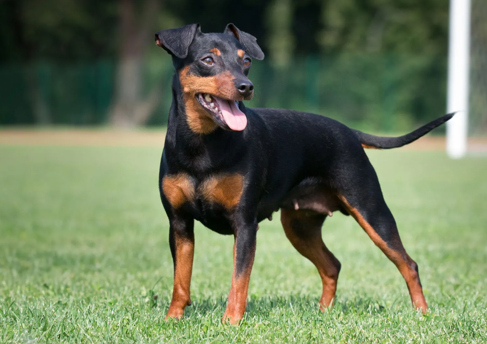

MINIATURE
Weight:
8-10 lbs.
Height :
11 in.
Length:
Short .
Color:
Stag red, black with rust markings.
Longevity:
12 – 14 yrs.
Miniature personality
The Miniature Pinscher is a perpetual motion machine, a spitfire among dogs. Cocky, brash, curious and impetuous, these dogs are their own three-ring circus. They have been dubbed the king of toys, a particularly fitting name not only because of their king complexes, but because they adore toys, toys and more toys. The person who shares his or her life with a minpin is never bored.True to their terrier heritage, these dogs can be scrappy with other dogs and enjoy a chance to play vermin hunter. Miniature Pinschers can be so involved in their own affairs that they ignore your commands. Some would even call them stubborn. This is not a breed that can be let off the lead safely.
What to expect
Miniature Pinschers are forever on the move. This is good if you like activity and entertainment this is bad if you already have a hectic household or like peace and quiet. This is among the most active of all breeds fortunately, most minipins can burn off much of their energy playing indoors and do not require wide-open spaces to exercise.Coat care is wash and wear.
History of the Miniature
The Miniature Pinscher is not a miniature Doberman Pinscher at all. Although they share the same homeland of Germany, the relationship stops there. The Miniature Pinscher is a unique breed that is more than the sum of its parts, probably resulting from crosses between a small, Short-haired Terrier, Dachshund, and Italian Greyhound.Dogs resembling them were depicted in art as early as the 1600s, but it was not until the 1800s that they were definitely developed into a distinct breed, the reh pinscher (reh because they resembled the German reh deer, and pinscher meaning terrier).During the early days of dog shows, breeders almost ruined the Miniature Pinscher by breeding for small size at the expense of all other criteria. By 1900, breeders had corrected their direction and the Miniature Pinscher has never looked back. The breed's elegance and showmanship propelled it to heights as a show dog in pre-World War I Germany and, although its numbers there were decimated by the war, it has flourished as a show dog and companion throughout the world since.